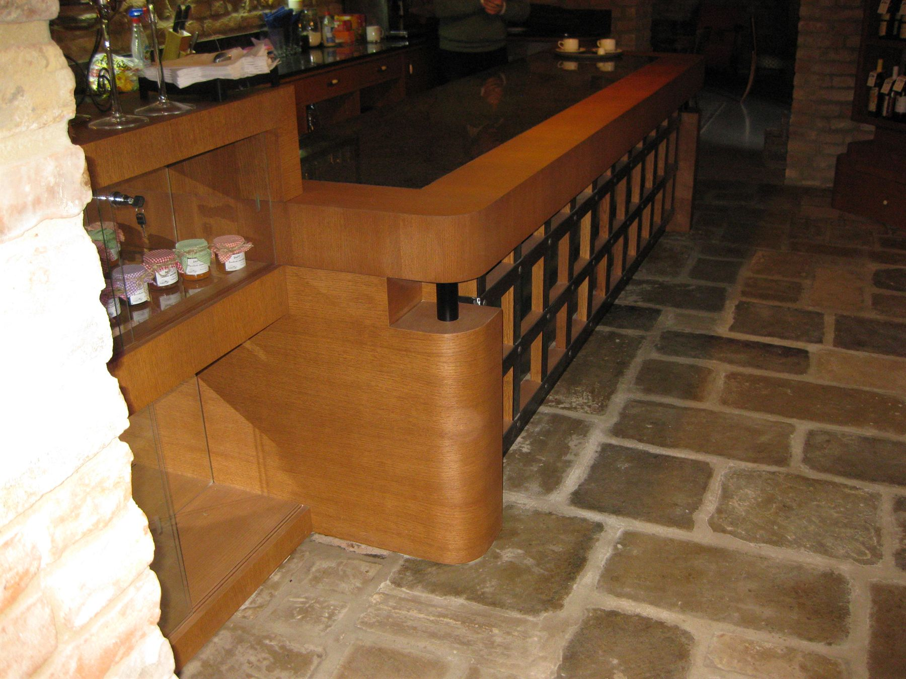
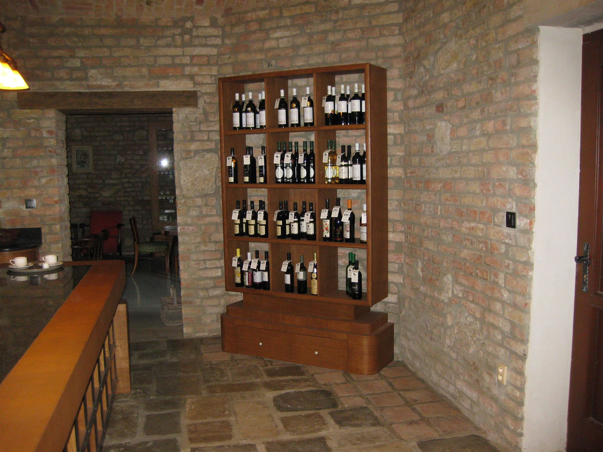
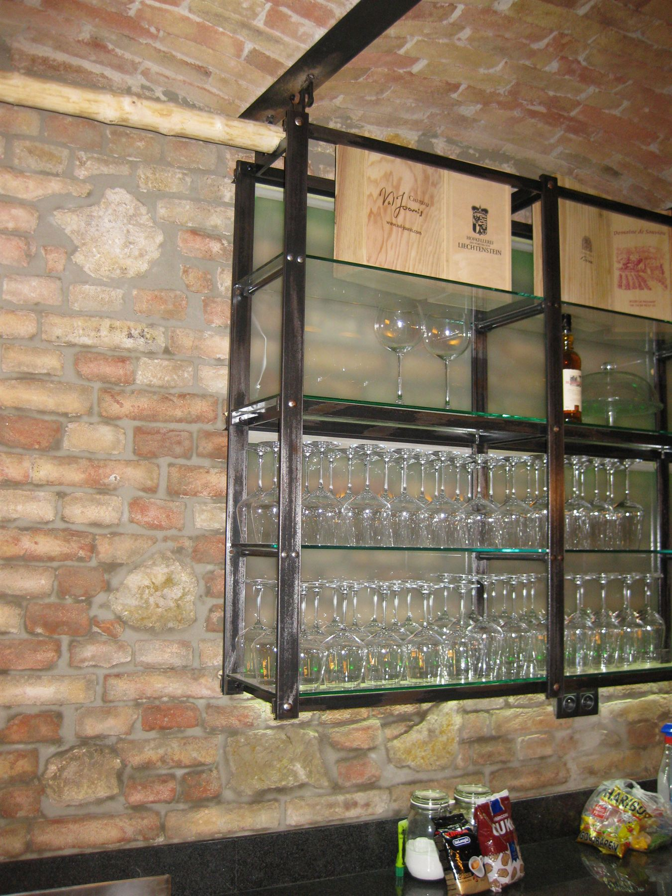
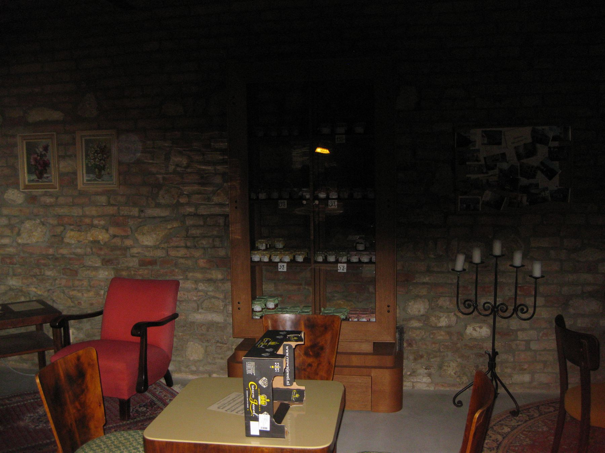
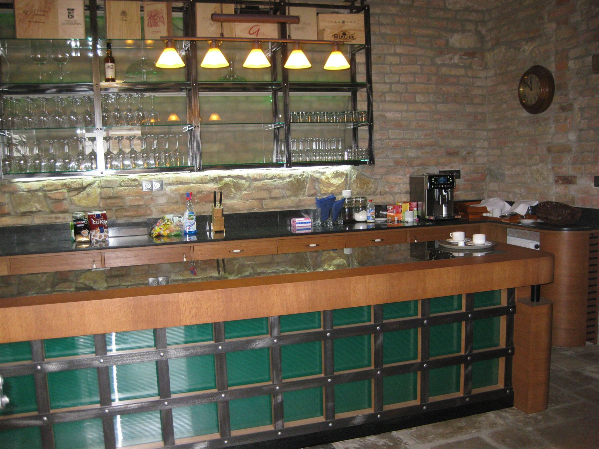
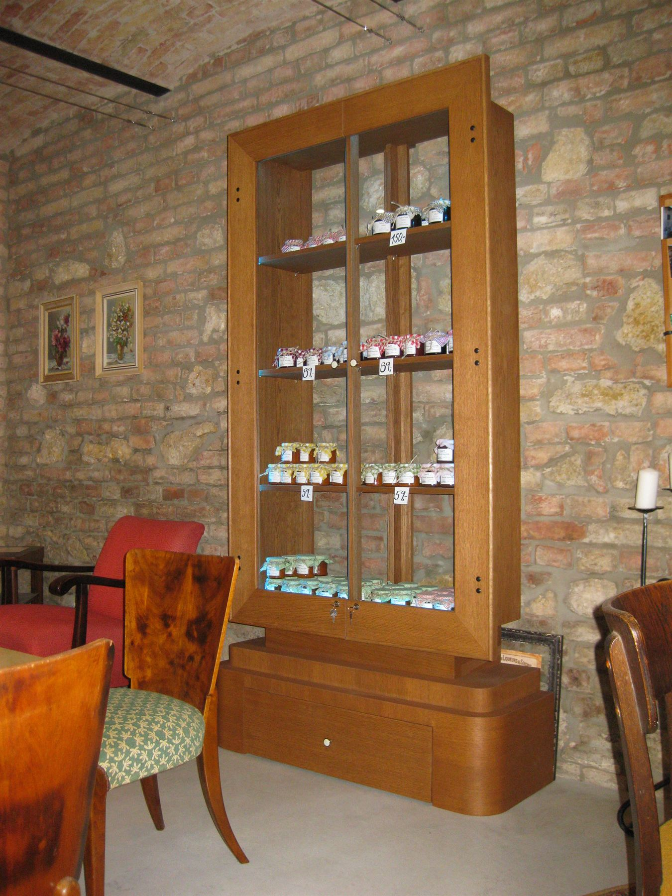
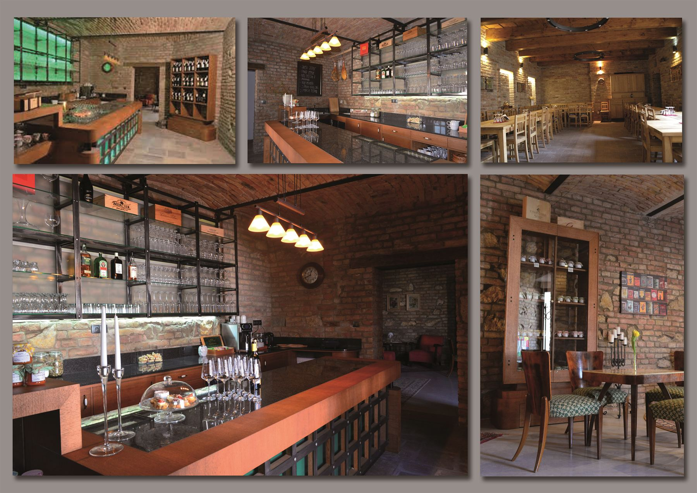
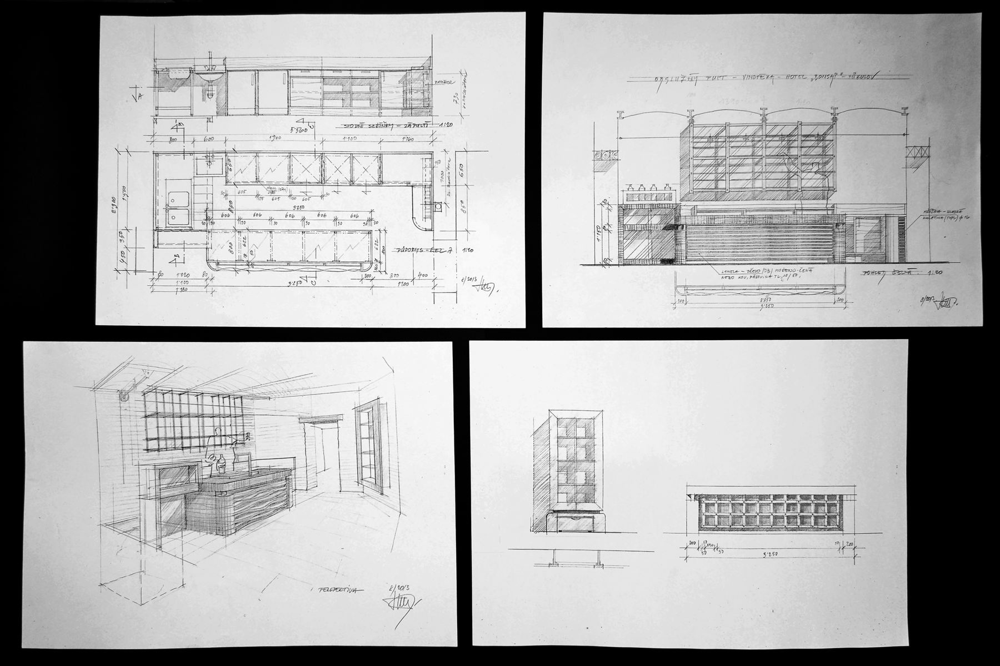

2014 Vinárny
Vinárna U Kovaříků
Mikulov, Hotel Bonsai
Interiér vinárny pod cihelnou klenbou Hotelu Bonsai v Mikulově – osvětlený pult z dřeva, železa a skla a vitríny navržené na míru.
Rok2014
MístoMikulov, Hotel Bonsai
TypInteriér vinárny
StavRealizováno
RozsahInteriér, obslužný pult, vitríny, osvětlení

01 O projektu
O projektu
Kamenná dlažba, cihelné zdi a klenba určily charakter prostoru. Do něj vstoupil osvětlený obslužný pult, který kombinuje dřevo, železo a sklo.
Vitríny na víno a sklo jsou navržené na míru konkrétním stěnám – od ruční skici až po realizaci.
02 Fotografie
Realizace
6 fotografií · klikněte pro zvětšení











03 Skica / Realizace
Od skici k realizaci
Vitrína nejdřív vznikla tužkou na papíře – a pak ve stejných proporcích ve vinárně.

Skica Realizace04 Výkresy a skici
Kompozice z monografie
Výkresy, skici a fotografie projektu tak, jak jsou nafocené v monografii.



